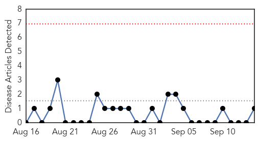
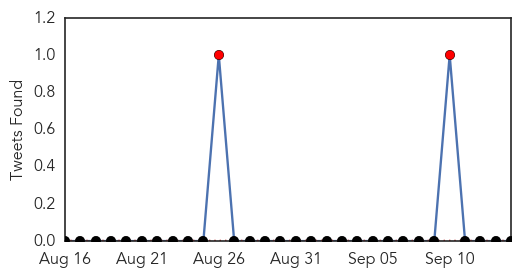

Bubonic Plague
30-Day Web Trend
5 alerts, 3 warnings

30-Day Twitter Trend
0 alerts, 0 warnings

Article Locations

Article Confidences

Top Articles:
- 0.832
- BREAKING: Michigan Health Officials Confirm Bubonic Plague
- 0.832
- BREAKING: Michigan Health Officials Confirm Bubonic Plague
- 0.772
- Marquette County resident contracts plague in Colorado - IronMountainDailyNews.com
- 0.752
- Mich. resident contracts plague on Colorado trip
- 0.712
- Michigan resident tests positive for plague
- 0.683
- Case of bubonic plague confirmed in Michigan, no concern regardi
- 0.640
- U.P. teacher 1st in Michigan to contract plague
Top Tweets:
-
No tweets found for Sep 14, 2015
Mumps
30-Day Web Trend
0 alerts, 0 warnings

30-Day Twitter Trend
2 alerts, 0 warnings

Article Locations
Article Confidences

Top Articles:
Top Tweets:
-
No tweets found for Sep 14, 2015